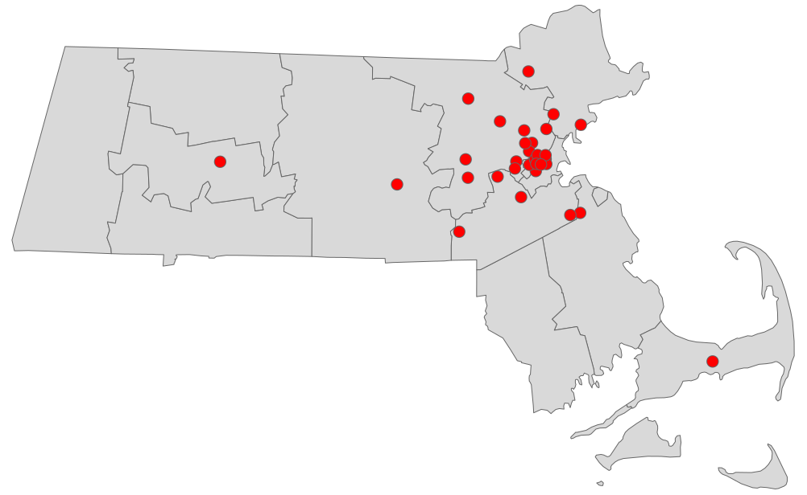
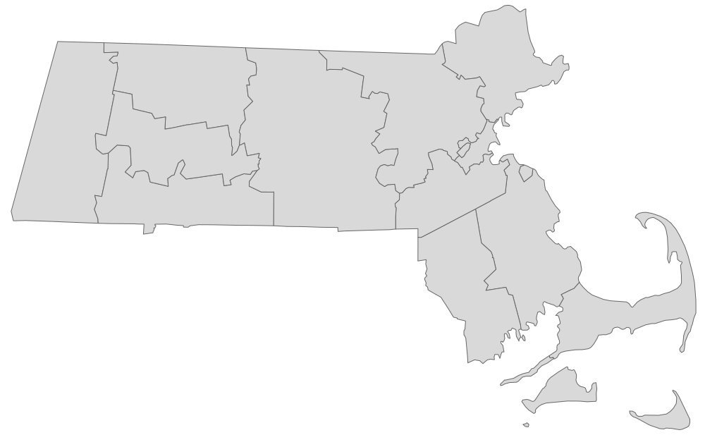

In this tutorial we will show Whole Foods store locations on the vector map of Massachusetts. The final map will look like this:
We will need two pieces of data:
The shapefile format is a popular geospatial vector data format for geographic information systems (GIS). It is developed and regulated by Esri (Environmental Systems Research Institute).
You can download free shapefiles from census.gov web site. I chose the national county file cb_2017_us_county_5m.zip containing state and county data. The zip file contains multiple files. Extract them in some directory, such as, /data/cb_2017_us_county_5m/.
You can get store addresses at Whole Foods web site. Then you can lookup geo coordinates (latitude and longitude) by address. There are multiple free web sites where you can do that. I stored data in a CSV file with 3 columns: Address, Latitude, and Longitude.
We are ready to create a map. We will need following libraries. Make sure that they are properly installed on your system.
Next, we will load national county shapefile, extract Massachusetts data and draw the map.
The map should look like this:
We used sf library to load national county shapefile from /data/cb_2017_us_county_5m/ folder into sf_us variable. The structure of sf_us variable is similar to a conventional data frame. It contains data for all states.
The state information is stored in STATEFP column as a FIPS code. The FIPS code for Massachusetts is 25. Extracting geodata for Massachusetts is similar to subsetting any other type of data in R.
Finally we used qtm() API from tmap library to create the map.
First, read the CSV file with Whole Foods geo coordinates into a dataframe variable wfs. To be able to draw store locations, we have to create sf object sf_wfs from wfs data frame. Finally, draw two layers with two qtm() functions, the map and red dots.
The final map looks like this: